Install CAVE
CAVE is the Common AWIPS Visualization Environment that is used for rendering and analyzing data for AWIPS. Unidata supports CAVE to work on three platforms: Centos (Redhat) Linux, Windows, and macOS. The installer may require administrator priviledges to install and may require other system changes (environment variables, etc) as well.
Latest CAVE Versions
General Requirements
Regardless of what Operating System CAVE is running on, these general requirements are recommended in order for CAVE to perform optimally:
-
Local machine
Running CAVE via X11 forwarding or ssh tunneling is not supported. Using a VNC connection is the only remote option, and may result in worse performance than running locally.
-
Java 1.8
- OpenGL 2.0 Compatible Devices
- At least 4GB RAM
- At least 2GB Disk Space for Caching
- NVIDIA Graphics Card
-
While other graphics cards may work, NVIDIA Quadro graphics card is recommended for full visualization capability
Linux
Latest Version: 18.2.1-6
System Requirements
- 64 bit CentOS/Red Hat 7
- Bash shell environment
While CentOS8 has reach End of Life as of Dec. 31, 2021, CentOS7 End of Life isn't until June 30, 2024.
Download and Installation Instructions
- Download the following installer: awips_install.sh
- In a terminal, go to the download directory
- Make the installer an executable by running:
chmod 755 awips_install.sh - Run the installer:
sudo ./awips_install.sh --cave- This will install the application in
/awips2/cave/and set the local cache to~/caveData/
- This will install the application in
Run CAVE
To run CAVE either:
- Use the terminal and type the command
cave - Find the application in the Linux Desktop menu: Applications > Internet > AWIPS CAVE
Windows
Latest Version: 18.2.1-6
For Windows, Unidata offers two installation options: a Linux Virtual Machine, or a Direct Windows Installation.
Currently, the virtual machine (VM) is the recommended form of install for those who do not have administrative priviledges on the machine, or beginners who want a simpler installation process.
At the moment, the VM option may not render all products in CAVE (ex. RGB composites of satellite imagery)
The direct installation method is recommended for those who have administrative priviledges and a little bit of experience installing more software.
Method 1: Linux Virtual Machine
This method is recommended for beginners, or those with less computer knowledge as it is a very simple installation, however at this time, some CAVE functionality may be missing (ex: rendering RGB satellite images).
System Requirements
- VMWare Workstation Player must be installed (free software):
-
For high definition monitors (4k), you will want to enable the high DPI setting for VMWare Workstation Player
- Create a desktop shortcut for VMWare Workstation Player
- Right-click the shortcut and select Properties
- Open the Compatability Tab
- Select the "Change high DPI settings" button
- Check the "High DPI scaling ovveride" checkbox and choose "Application" in the enabled dropdown
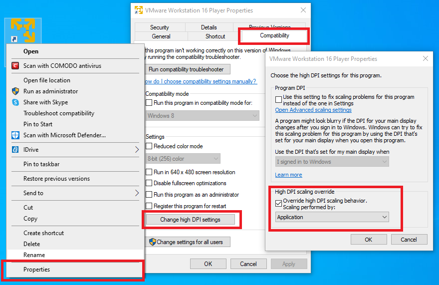
Download and Installation Instructions
- Download the zipped file containing the virtual machine: unidata_cave.zip
- Unzip the folder by right-clicking and selecting "Extract All". All files will be extracted into a new folder.
- Open VMWare Player and go to Player > File... > Open and locate the folder that was created from the downloaded zipped file. Select the file called "CentOS 7 - Unidata CAVE 18-2-1-6.vmx".
- Run this new VM option. If it asks if it's been moved or copied, select "I Copied It".
- There will be a user in the Linux machine named "awips" and the password is "awips"
- The root password is "unidataAWIPS" if ever needed
Run CAVE
Once inside the VM, to run CAVE either:
- Use the desktop icon
- Use the terminal and type the command
cave - Find the application in the Linux Desktop menu: Applications > Internet > AWIPS CAVE
Method 2: Direct Windows Install
This method is recommended for personal use and requires Administrative priviledges. It should enable full CAVE capability, but it is a bit lengthy and might take about 20 minutes or so to complete.
For additional assistance we have created an installation video that walks through the steps below.
It is important to use the exact versions of software that we link to or specify in our instructions. Deviations may cause installation problems or failures.
System Requirements
- 64-bit Miniconda3 (Python3.7 - 4.8.2)
- Python3 (comes with Miniconda installation)
- 64-bit Java JDK 1.8 (1.8_181)
- 64-bit Visual C++ Build Tools 2015 and 2019
- Numpy (1.15.1)
- Jep (3.8.2)
- User Variable PATH must have miniconda3 location
- User Variables PYTHONHOME and PYTHONPATH must be defined
- System Variable JAVA_HOME must be defined
Download and Installation Instructions
- Download and install 64-bit Miniconda Python3.7 version 4.8.2 for Windows
- Allow Miniconda3 to set PATH and other environment variables
- Register miniconda as the default python 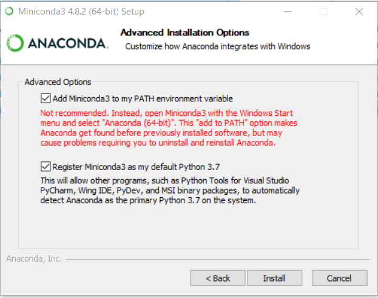
- Download and install the 64-bit Java JDK 1.8_181 (this is necessary so Jep can install properly).
- Select Development Tools as the installation options
- Make note of where it installs on your computer (the default is C:\ProgramFiles\Java\jdk1.8.0_181)
-
Set the environment variables:
- Access the Environment Variables window by typing "env" in the start bar, hitting enter, and clicking on the "Environment Variables..." button at the bottom of the "System Properties" window
- Create the variables in their respective locations using the New... buttons
- User Variables: PYTHONPATH and PYTHONHOME
-
System Variable: JAVA_HOME 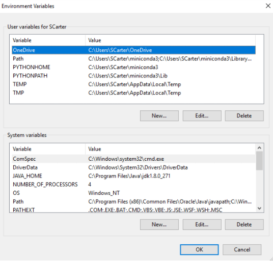
If PYTHONHOME is not set, the gridslice Python module will not be installed or available
-
Download and install 64-bit Microsoft Visual Studio C++ Build Tools
- To access the page linked above you will need a Microsoft account
- Download the executable for Build Tools for Visual Studio 2019 (version 16.9)
- Allow it to run some pre-installations
- The installer will pop up as shown below. Make sure to select the C++ build tools (upper left), and then view the Installation details on the right
- Scroll down and check the MSVC v140 - VS 2015 C++ build tools 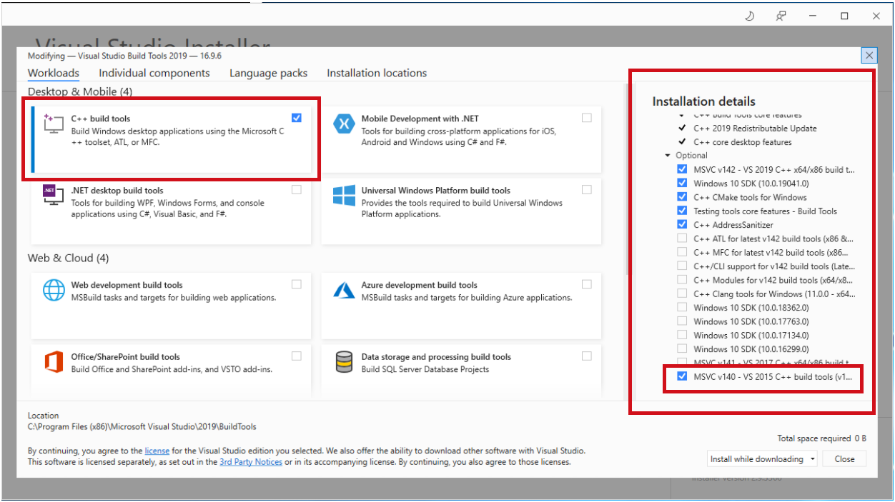
- Install dependent Python packages
- Once the installer has finished, close the installer. Another window is present and there is an option to launch a command terminal 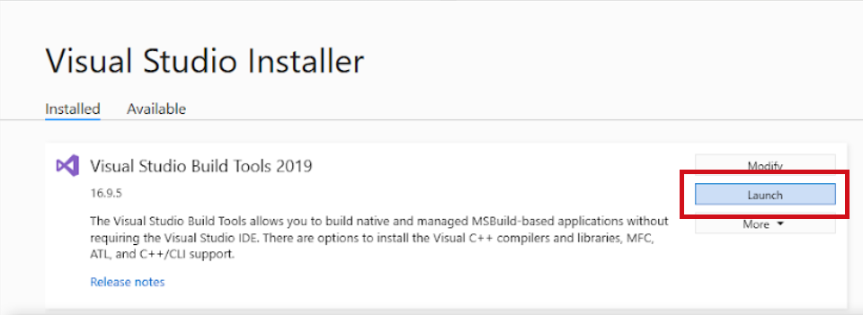
- Click that and run the following:
pip install numpy==1.15.1pip install jep==3.8.2
These must be run as two separate commands, as stated above for all derived parameters to display properly.
- Download and install: awips-cave.msi
- In addition to the application directory, the MSI installer will attempt to copy the gridslice shared library to
$PYTHONHOME/Dlls/. If the$PYTHONHOMEenvironmental variable is not defined gridslice will not be installed. You can check to see if it was installed in the Dlls directory after you have completed steps 1-3.
CAVE will still run without gridslice, but certain bundles which use derived parameters, such as isentropic analysis, will not load.
- In addition to the application directory, the MSI installer will attempt to copy the gridslice shared library to
{kind=link}
Run CAVE
To run CAVE, either:
- Type "cave" in the start bar and hit enter
- Find and run CAVE app in the file browser: C:\Program Files\Unidata\AWIPS CAVE\cave.exe
macOS
Latest Version: 18.2.1-6
System Requirements
MacOS Monterey version 12.3 and above no longer supports Python2. This will cause several visualization aspects to fail in CAVE. If you update to MacOS 12.3 CAVE will not be fully functional. A potential workaround is to run a Virtual Machine with a different OS (older Mac or possibly CentOS7) and run CAVE inside of that.
- Will need admin privileges to install
awips-python.pkg -
NVIDIA Graphics card is recommended, however some Intel Graphics cards will support a majority of the functionality
Most AMD graphics cards are not supported
Download and Installation Instructions
-
Download and install: awips-python.pkg (This step requires administrative privileges)
- Once downloaded, double click and the installer will launch with the following screens, please keep the default selections:
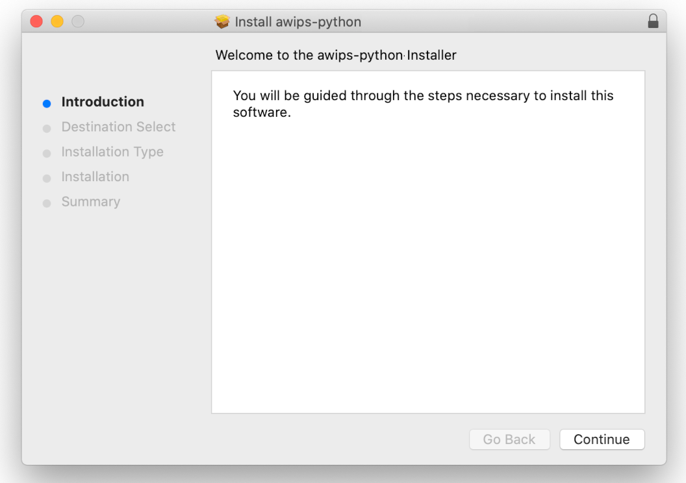 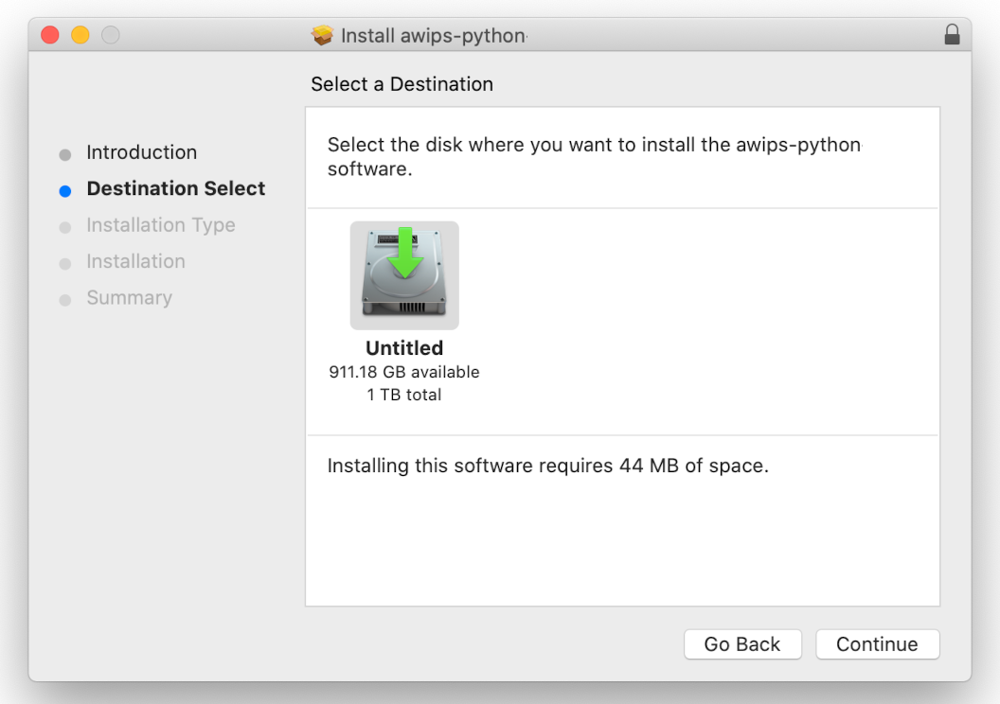 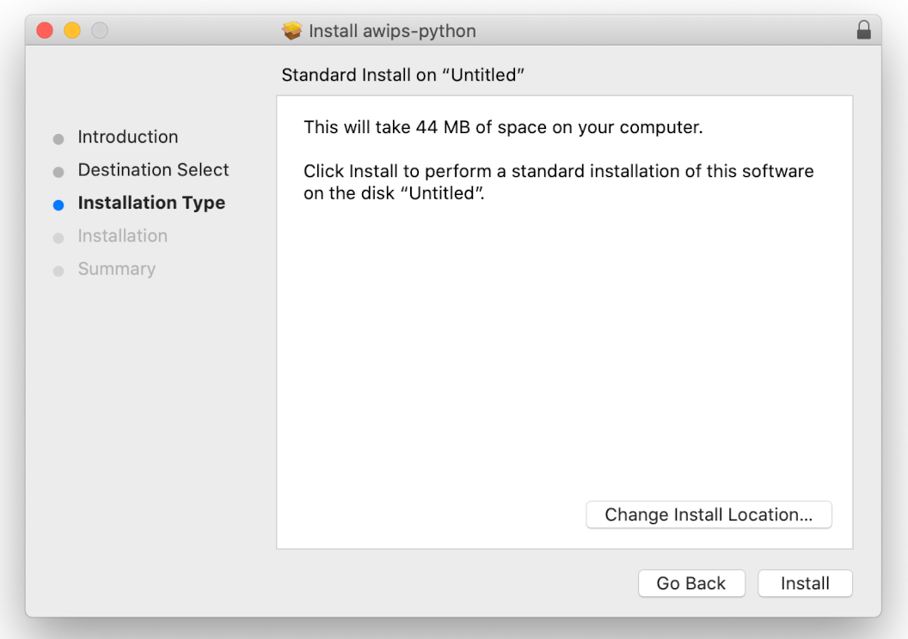
Between these steps it will prompt for an administrator's password
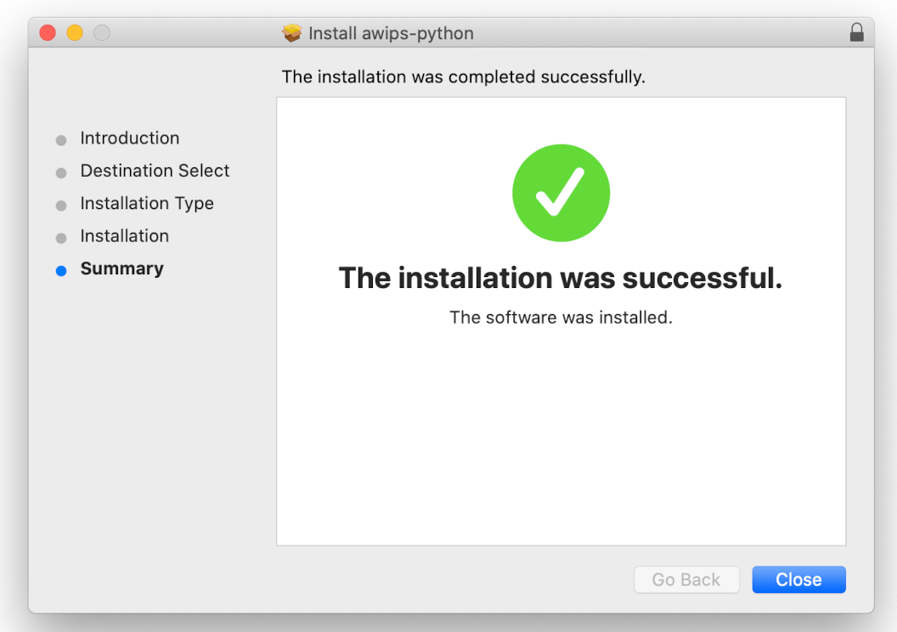
The awips-python.pkg is not necessarily required, and CAVE will still run without it, but any derived data such as barbs, arrows, and various grid products will not render without having jep installed (it is assumed to be in /Library/Python/2.7/site-packages/jep/)
-
Download and install: awips-cave.dmg
-
Either use the default location, which is in the system-wide "Applications" directory, by clicking and dragging the CAVE icon into the Applications folder, in the window that pops up when installing:
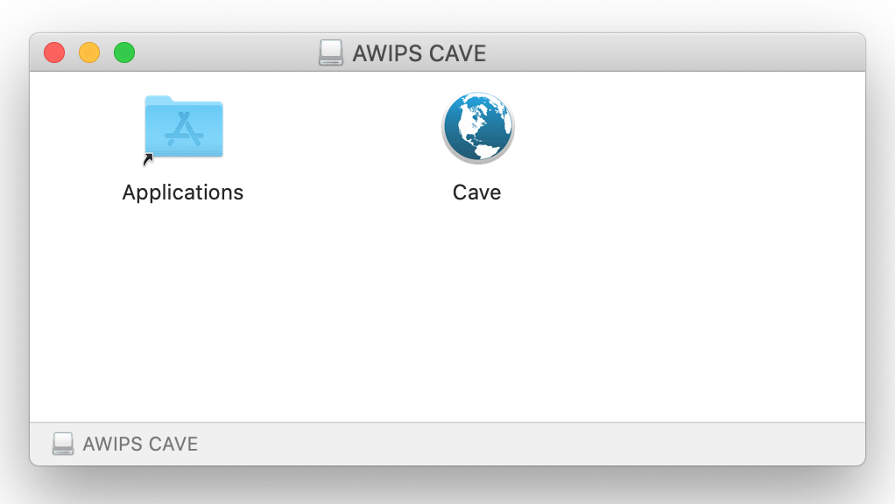
-
Or open a new Finder window to your [user home]/Applications/ directory (if it doesn't exist, simply create a new folder with the name "Applications"), and drag the CAVE icon into that folder: 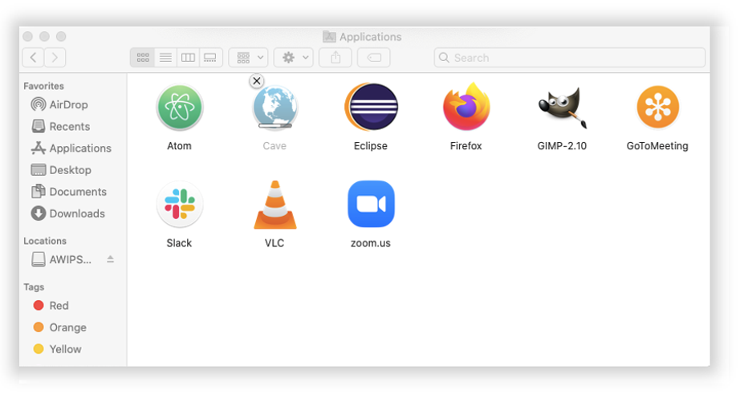
- This will install CAVE as an application and set the local cache to
~/Library/caveData
-
Run CAVE
To run CAVE either:
- Use the System Menu Go > Applications > CAVE
- Type ⌘ + Spacebar and then type "cave", the application should appear and you can hit enter to run it
The first time CAVE is opened, it will ask you if you are sure you want to run it, because it was downloaded from the internet and not the Apple Store. This is normal, and hit Open. Your message my differ slightly but should look like the image below:
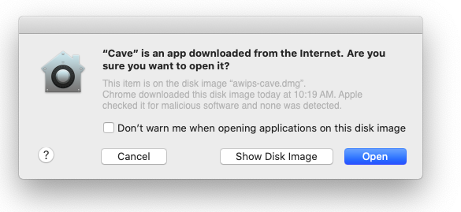
MacOS Monterey Warning
If you are running MacOS Monterey, you may see the following message when starting CAVE:
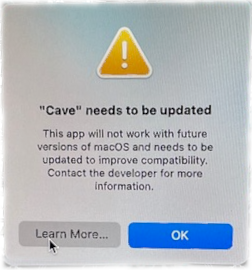
This message can be ignored, and will hopefully go away when we release version 20+ of AWIPS.
EDEX Connection
Unidata and XSEDE Jetstream have partnered to offer a EDEX data server in the cloud, open to the Unidata university community. Select the server in the Connectivity Preferences dialog, or enter edex-cloud.unidata.ucar.edu (without http:// before, or :9581/services after).
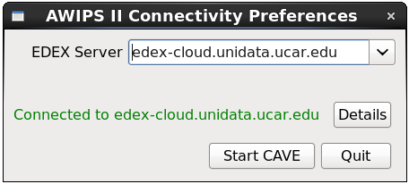
Local Cache
After connecting to an EDEX server, you will have a local directory named caveData which contains files synced from EDEX as well as a client-side cache for data and map resources.
You can reset CAVE by removing the caveData directory and reconnecting to an EDEX server. Your local files have been removed, but if you are re-connecting to an EDEX server you have used before, the remote files will sync again to your local ~/caveData (bundles, colormaps, etc.).
- Linux:
/home/<user>/caveData/ - macOS:
/Users/<user>/Library/caveData/ - Windows:
C:\Users\<user>\caveData\
Uninstalling CAVE (Linux)
These are instructions to manually uninstall CAVE. However, the awips_install.sh script will do these steps for you if you are installing a newer version of CAVE.
1. Make sure you have exited out of any CAVE sessions
2. Remove currently installed CAVE
sudo yum clean all
sudo yum groupremove "AWIPS CAVE"
If you are having trouble removing a group, see the troubleshooting section.
3. Check to make sure all awips rpms have been removed
rpm -qa | grep awips2
If you still have rpms installed, remove them
sudo yum remove awips2-*
4. Remove the cave directory in /awips2 and caveData from your home directory
rm -rf /awips2/cave
rm -rf ~/caveData